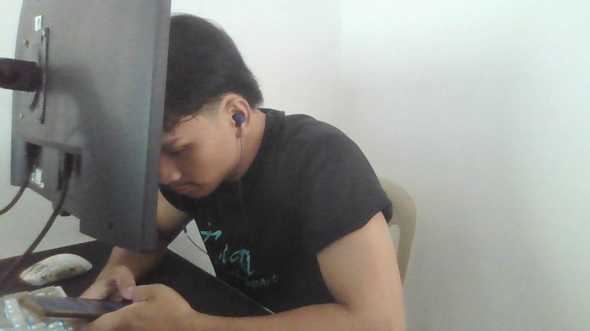

Online Paluwagan System
A web system that puts the traditional paluwagan online. I worked on design, testing, and debugging.
Security features: 2FA, facial recognition, and terms and conditions that require members to upload an ID file.
PHP, MySQL

I'm Polo, a BSIT student at STI Tanay, graduating 2027. I'm looking for an OJT in IT support.
I like web development and solving problems, and I've helped build two web systems that moved offline processes online.
Hello! I'm Polo, a Bachelor of Science in Information Technology student from STI Tanay. I like technology, web development, and solving problems. I helped build two web systems that moved offline processes online, and I did my work immersion and community service at Brgy. Kay Buto, Tanay, Rizal, where I did encoding and troubleshooting. My goal is to work in IT support and keep learning new technologies.
A web system that puts the traditional paluwagan online. I worked on design, testing, and debugging.
Security features: 2FA, facial recognition, and terms and conditions that require members to upload an ID file.
PHP, MySQL
A web system for managing library resources online. I worked on design, testing, and debugging.
PHP, MySQL
A responsive calculator application.
HTML, CSS, JavaScript
This responsive personal website.
HTML, CSS, JavaScript
IBM SkillsBuild badge
October 21, 2026
IBM SkillsBuild badge
September 7, 2026
Oracle Academy course completion award
June 19, 2024
STI College Tanay · May 10, 2023